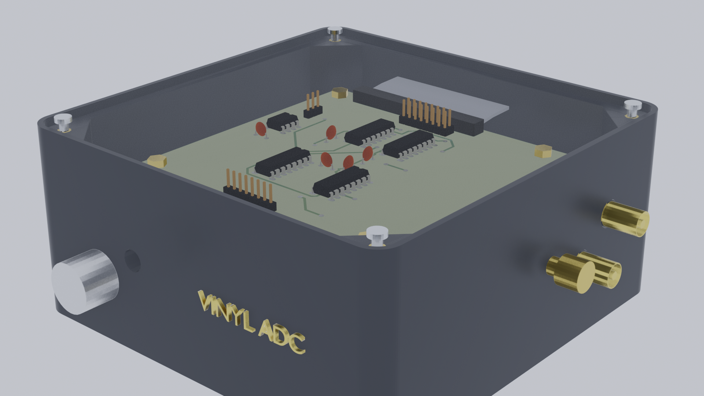
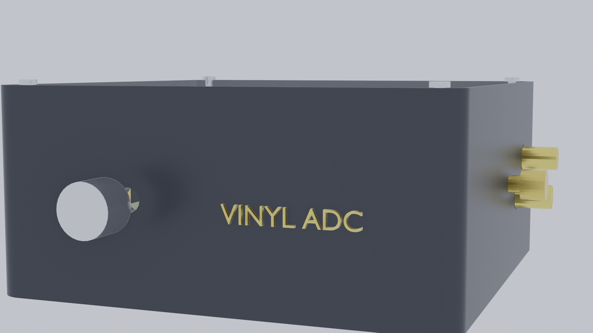
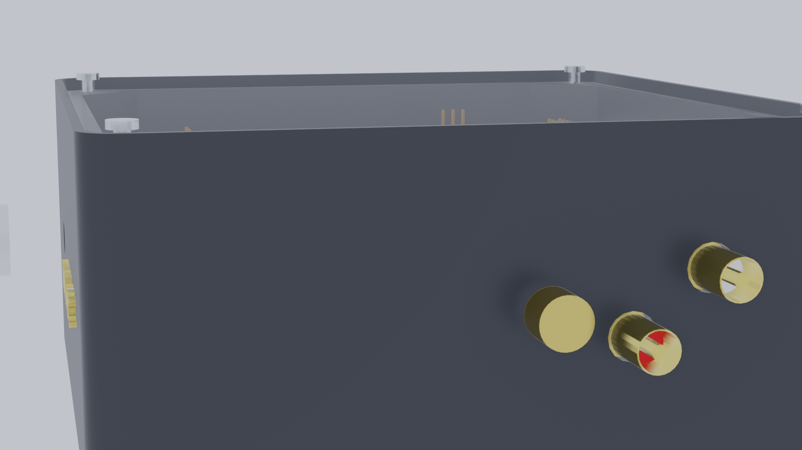

Vinyl ADC — Audiophile Discrete Converter
An audiophile-grade stereo audio analog-to-digital converter engineered entirely from standard discrete analog op-amps (TL072), high-speed comparators (LM311), and 74HC CMOS logic—completely eliminating monolithic ADC chips from the analog signal path. Built specifically for high-fidelity turntable digitization between an Ortofon cartridge phono stage and a Raspberry Pi, it converts incoming analog waveforms directly into an oversampled 1.536 MHz continuous-time bitstream with third-order noise shaping (+60 dB/decade), outputting bit-perfect 24-bit / 48 kHz Linear PCM FLAC via digital CIC and FIR decimation.

Engineering & Audio Specifications
Derived strictly from repository hardware schematics, SPICE noise-shaping models, and physical CAD measurements.
Portfolio Studio Renders
Rendered at 1920 × 1080 with high-contrast AgX color management and neutral studio lighting in Blender 5.1.
Hero Shot (3/4 Studio Perspective)
Isometric perspective highlighting the satin matte dark charcoal chassis, crystal-clear acrylic lid revealing the internal PCB stack, gold branding, and knurled gain knob.

Front Panel & Connector Elevation
Front elevation showing the calibrated input gain control knob, status LED indicator, and side 24k gold RCA phono input jacks with dedicated tonearm ground post.

4-Tier Exploded Assembly View
Vertical stage explosion displaying the clear acrylic lid hovering above the 4 discrete tiers: Digital Clock Board, Dual Modulator Channels, and Base Power Supply.

Analog Phono & Tonearm Ground
Panel-mount gold RCA phono input jacks with Teflon dielectric and solid brass knurled thumb-screw binding post for turntable tonearm chassis grounding.
How It Was Built: Technical Pipeline
From discrete SPICE simulation and KiCad layout through parametric CAD to photorealistic studio rendering.
KiCad 10 Design & SRM-CAM
Modular 4-board stack (100 × 100 mm each) engineered for single-sided isolation milling on a Roland SRM-20 CNC mill via SRM-CAM. Star-ground architecture isolates analog audio returns from digital switching noise.
3D CAD Board Export
Exported using kicad-cli pcb export step and glb with native footprints and 3D packages (DIP-8, DIP-14, DIP-16, DIP-20, axial resistors, capacitors, and stacking headers).
Parametric Enclosure
Parametrically modeled in OpenSCAD with 0.5 mm board clearance on all sides, 3.0 mm wall thickness, M3 mounting bosses at (±44 mm, ±44 mm), and cutouts matching connector coordinates.
Blender Studio Rendering
Assembled in Blender with 3-point soft area lighting, physical material nodes (matte PLA roughness 0.32, crystal clear acrylic transmission 0.98, polished brass), and rendered at 1920 × 1080.